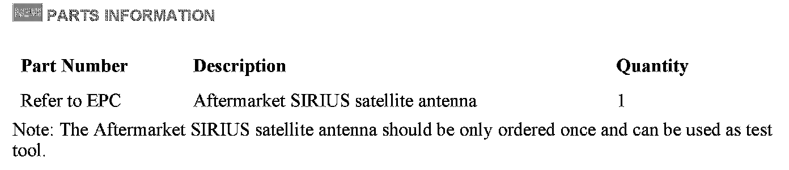
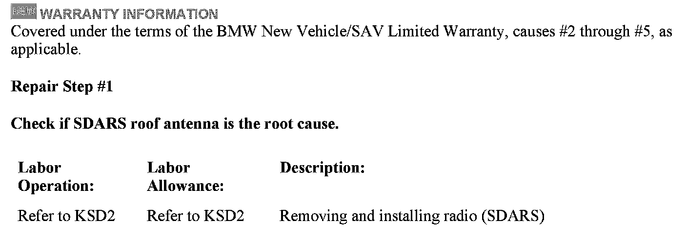
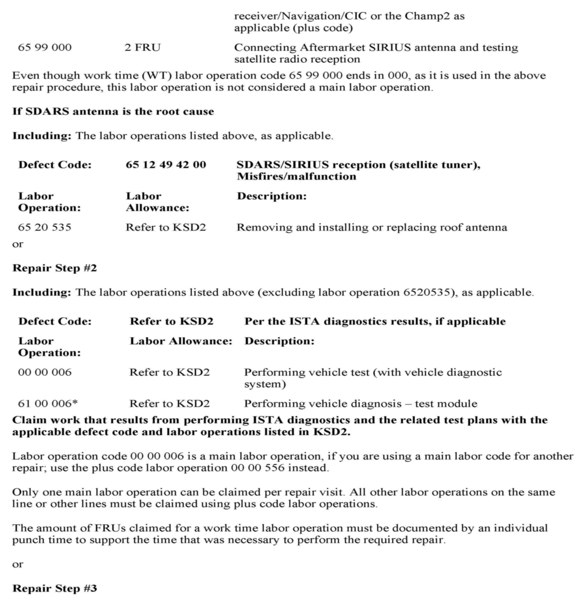
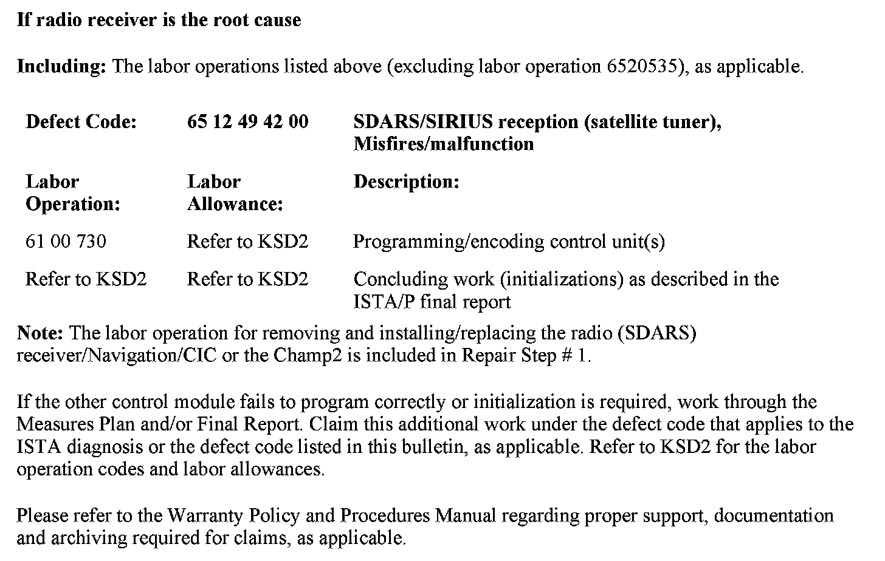

Audio System - SDARS/SIRIUS(R) Radio Inoperative
SI B65 07 07Audio, Navigation, Monitors, Alarms, SRS
July 2011
Technical Service
This Service Information bulletin supersedes SI 65 07 07 dated March 2008.
[NEW] designates changes to this revision
SUBJECT
SDARS SIRIUS Radio Is Intermittently Inoperative
MODEL
All
Vehicles equipped with option 655 (Satellite Radio)
SITUATION
The SIRIUS/XM satellite radio is intermittently inoperative and "Acquiring" is displayed in certain cases.
[NEW] CAUSE
The antenna signal is missing for the following possible reasons:
1. The vehicle is in an area without connection to the SIRIUS/XM satellite.
^ Inside a building (parking garage, workshop, ...)
^ In tunnels
^ In a dense urban area surrounded by high-rise buildings
^ Under trees
^ In a valley or mountainous area
2. Defective SDARS antenna
3. Defective SDARS antenna cable
4. Defective connector on:
^ The SDARS antenna
^ The SDARS receiver
5. Internal fault in the SDARS receiver
[NEW] CORRECTION
Try to reproduce the complaint with the customer when possible. If it can be reproduced, follow the procedure below.
[NEW] PROCEDURE
Cause #1
A. Ask the customer where (location) and how often it is happening (can it be reproduced all the time?)
^ Try a similar vehicle for verification at the same location and time.
If it acts the same way, then the functionality is normal and no further steps have to be taken.
^ For information on SIRIUS/XM satellite radio functionality, please refer to Service Information B65 02 05.
Causes #2 through #5
B. If it is acting differently, follow these steps:
^ Check if the installed SDARS roof antenna (including the SDARS antenna cable) is defective by connecting an aftermarket SIRIUS antenna and retest.
^ Check the connectors on the SDARS antenna (shark fin) and on the SDARS receiver.
^ If there is no problem found on the SDARS antenna including the SDARS antenna cable and connectors perform step C.
C. Perform diagnosis using ISTA (Integrated Service Technical Application), and troubleshoot any faults related to the SIRIUS/XM satellite radio system.

[NEW] PARTS INFORMATION



[NEW] WARRANTY INFORMATION